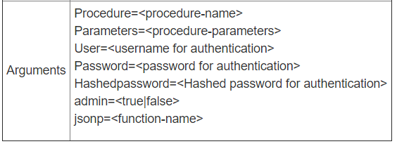

（五）VoltDB 存储过程
Posted on 2017-02-10(星期五) 10:00 in VoltDB
一、存储过程简介
存储过程是 VoltDB 用来定义事务的，可以将一组 sql 封装到使用Java编写的存储过程当中。当然是可以供外部的客户端调用来实现 VoltDB 的 CRUD 操作。建立存储过程的方式可以有两种，直接采用 DDL 定义或使用 Java 语言。下面将会详细介绍。
1.1 简单的存储过程
简单的存储过程编写是纯SQL语句实现（DDL定义），VoltDB 提供了SQL运行环境 sqlcmd，在启动 VoltDB 后在另外的 shell 窗口（进入同样的目录）,输入命令 sqlcmd，在进入环境之后，就可以编写SQL，当然在编写存储过程之前，必须确保 VoltDB 当中已经创建了表空间。如下示例是使用SQL创建存储过程的范例；
CREATE PROCEDURE leastpopulated 1
AS SELECT TOP 1 county, abbreviation,
population FROM people, states WHERE
people.state_num=? 2
AND people.state_num=states.state_num
ORDER BY population ASC;
- 为建立的存储过程起一个名字
- 占位符的形式，接收传入的参数
上述只是正常情况下的编写，考虑到 VoltDB 分区特性，会出现需要查询的字段是作为分区键的，这时候可以在建存储过程时再加上 PARTITION PROCEDURE 。还是上述例子，这次 state_num 作为分区字段，存储过程可以这样写：
CREATE PROCEDURE leastpopulated
PARTITION ON TABLE people COLUMN
state_num AS
SELECT TOP 1 county, abbreviation,
population FROM people, states WHERE
people.state_num=? AND
people.state_num=states.state_num ORDER
BY population ASC;
建立之后，可以在 sqlcmd 窗口下调用它，另外也可以在外部通过客户端调用来使用。
1> exec leastpopulated 6;
上述情况是通过SQL的DDL来建立简单的存储过程，但是比如当需要编写一组SQL定义一个事务，就需要复杂的存储过程来定义，即使用Java封装存储过程。
1.2 复杂的存储过程
VoltDB 提供使用 java 来封装基于 sql99 标准的存储过程，这类存储过程更过于复杂，配合多次查询以及需要查询后的结果用来计算，VoltDB 提供了这类存储过程标准的书写方式:
import org.voltdb.*;
public class Procedure-name extends VoltProcedure {
// Declare SQL statements ...
public datatype run ( arguments ) throws VoltAbortException {
// Body of the Stored Procedure ...
}
}
首先必须引用 VoltDB 所有的 API 包，在编写类时必须继承 VoltProcedure 接口。然后就是 SQL 的声明，在使用到参数的地方必须用占位符代替。下面将演示一段最简单的存储过程。
import org.voltdb.*;
@ProcInfo(partitionInfo = "HELLOWORLD.DIALECT: 2", singlePartition = true)
public class Insert extends VoltProcedure {
public final SQLStmt sql = new SQLStmt(
"INSERT INTO HELLOWORLD VALUES (?, ?, ?);");
public VoltTable[] run(String hello, String world, String language)
throws VoltAbortException {
voltQueueSQL(sql, hello, world, language);
voltExecuteSQL();
return null;
}
}
接下来需要编译 java 文件，然后打包成 jar 包，最后再发布到 VoltDB 中。
1.3 过程实现
- 编译，编译时需要指定到voltdb目录下，如下:
$javac -cp "$CLASSPATH:/home/smith/voltDB/voltdb-voltdb-6.9/voltdb/*" insert.java
- 打包
$jar cvf Select.jar insert.class
- 发布到数据库
21> load classes insert.jar;
在部署到数据库之后需要声明定义这个存储过程，如上 insert.jar 已经发布到 VoltDB 当中，然后在 sqlcmd 下执行如下 sql 完成存储过程在数据库中的声明：
22>CREATE PROCEDURE FROM CLASS insert;
然后查看已经在 VoltDB 中声明好的存储过程
23>Show procedure；
二、查看执行计划
对于已创建的或者要执行的存储过程，可以查看执行计划，执行计划解释了存储过程。VoltDB 提供了两个方法来查看执行计划，可以在sqlcmd中查看执行计划，比如：
1>explain select count(*) from votes;
2>explainproc Initialize;
Initialize为声明的一个存储过程
在阅读执行计划的时候需要从下纸上的顺序阅读。可以看到上述存储过程 Initialize 当中包含了三段 SQL 语句，从下到上的执行顺序。
三、Client 调用存储过程
经过编写，编译以及部署后的存储过程在执行时，可以通过外部的 Client 客户端调用其，VoltDB 提供了三种方式为调用提供便利，一个 Client 调用 VoltDB 存储过程的流程应该为：
- 建立连接
org.voltdb.client.Client myApp;
myApp = ClientFactory.createClient();
myApp.createConnection("localhost",21212);
- 调用存储过程
myApp.callProcedure("HELLOWORLD.insert", "Hello", "World", "English");
myApp.callProcedure("HELLOWORLD.insert", "Bonjour", "Monde", "French");
myApp.callProcedure("HELLOWORLD.insert", "Hola", "Mundo", "Spanish");
接受反馈消息：
if (response.getStatus() != ClientResponse.SUCCESS) {
System.err.println(response.getStatusString());
System.exit(-1);
}
final VoltTable results[] = response.getResults();
if (results.length == 0 || results[0].getRowCount() != 1) {
System.out.printf("I can't say Hello in that language.\n");
System.exit(-1);
}
- 关闭连接
try {
myApp.drain();
myApp.close();
} catch (InterruptedException e) {
e.printStackTrace();
}
```
注意：在建立连接的时候，可以只做集群的单节点连接，如上述程序所示，但也可以做多节点的连接，`VoltDB` 在 `Client` 属性当中提供了一种简便但又非常实用的属性(`topology-aware client`)可以在创建连接的时候设置，只需做到连接单个节点，同时使用这个属性对于应对节点的状态以及集群节点个数的增加非常轻松。
```java
org.voltdb.client.Client client = null;
ClientConfig config = new ClientConfig("","");
config.setTopologyChangeAware(true);
try {
client = ClientFactory.createClient(config);
client.createConnection("localhost",21212);
}catch（Exception e）{
}
上述过程演示了标准的 Client 调用存储过程的流程。下面会介绍使用HTTP 接口以及JDBC接口调用存储过程。
3.1 HTTP client程序调用
在使用HTTP方式调用Client之前，需要在voltDB的配置文件（deployment.xml）中将有关配置（
<httpd enabled="true" port="8081" >
<jsonapi enabled="true" />
</httpd>
端口号指定为8081，也可以在启动时使用 --http选项指定端口号。也可以使用SSL加密，可以使用 <https> 子元素来指定。
在打开HTTP接口之后，就可以通过其官方提供的标准访问路径调用存储过程。访问路径：http://<server>:8080/api/1.0/,其之后需要带着要调用的存储过程以及所需的参数，如下表所示：

可以在浏览器网址输入栏中输入以上URL并带上所需参数，无论调用成功与否都会返回一段 JSON 字符串，字符串中包含状态值，异常以及数据库返回的数据结果等。
{ appstatus (integer, boolean)
appstatusstring (string)
exception (integer)
results (array)
[ (object, VoltTable)
{ data (array)
[ (any type)
]
schema (array)
[ name (string)
type (integer, enumerated)
]
status (integer, boolean)
}
]
status (integer)
statusstring (string)
}
另外 HTTP 调用方式支持 python, perl, C#, PHP 以及使用 JQuery 调用。
3.2 JDBC client 程序调用
VoltDB 与普通关系型数据库一样，同样也是支持 JDBC 接口来调用存储过程。很方便，不需要引入 VoltDB 额外的 API 包，方法一致。
VoltDB 提供了与连接关系型数据一样的工具，驱动包以及 URL，使用 Class.forName() 方法来加载 JDBC 驱动包，数据库标准路径：jdbc:voltdb://<server>:<port> ,如果需要连接多个节点，则使用 , 隔开，默认端口号为 21212 .另外可以在路径上加入额外的参数比如在丢失与 VoltDB 的连接后可以设置 autoconnect 属性实现重新连接。
Class.forName("org.voltdb.jdbc.Driver");
Connection c = DriverManager.getConnection( "jdbc:voltdb://svr1:21212,svr2:21212?autoreconnect=true");
建立连接之后可以编写 SQL 执行，但在这里重点介绍调用存储过程。如下示例程序所示：
CallableStatement proc = conn.prepareCall("{call Select(?)}");
proc.setString(1, "French");
results = proc.executeQuery();
while (results.next()) {
System.out.printf("%s, %s!\n", results.getString(1),
results.getString(2));
}
四、WEB 项目使用 Client
如果需要在实际的web项目中使用 Client 客户端来调用存储过程，可以通过使用 maven 管理工具引入所需依赖包就可以在web项目中引入 VoltDB 有关的 API 包及方法。
<dependency>
<groupId>org.voltdb</groupId>
<artifactId>voltdbclient</artifactId>
<version>5.1</version>
</dependency>
关于 VoltDB 存储过程以及存储过程客户端调用介绍就先到此为止，以后有新的理解还会继续补充。